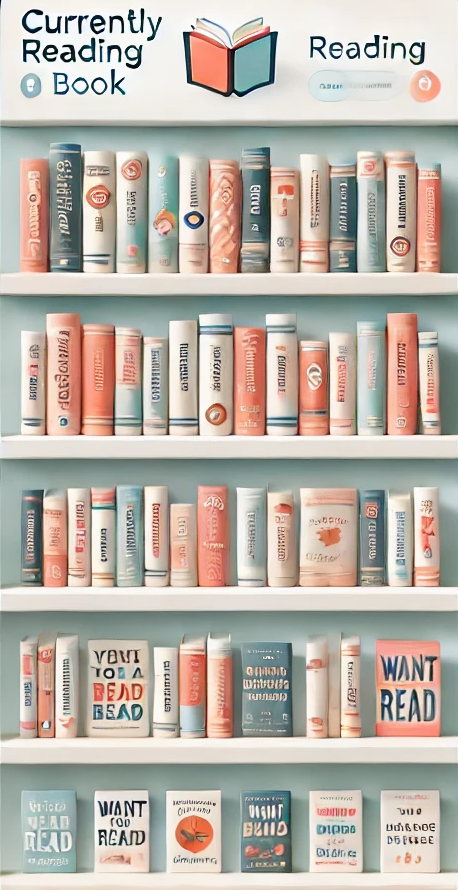

Team JV somos un grupo en alas de desarrollo, tal vez nos conozcas por nuestros cursos para los mas jovenes en el ambito de desarrollo de aplicaciones moviles. Esta vez os presentamos un proyecto que consideramos de grean utilidad para avidos de la lectura como nosotros. por ahora solo somos 2, los fundadores y unicos participantes, más esperamos crecer.
| tuVenezolanoFavorito | Sr. Jevi |
